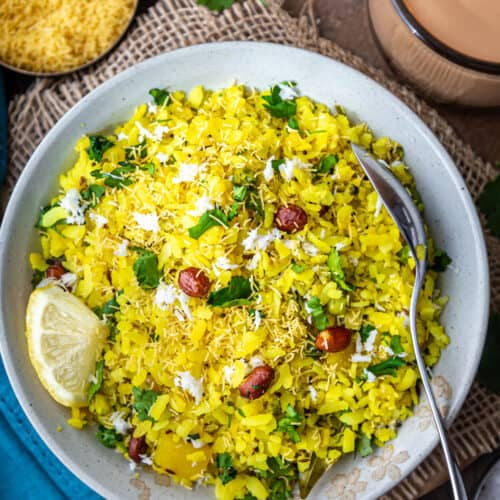

Poha

Ingredients:
- Poha or Flattened Rice
- Onion
- Green Chillies
- Oil
- Salt
- Cumin Seads
- Mustard Seads
- Lemon
Steps to make Poha:
- Add Poha to a collander and rinse with water.
- Strain the water.
- Chop onion, green chillies.
- Heat a pan with oil and saute some peanuts.
- Add cumin and mustard seeds.
- Add chopped onion and green chillies.
- Add turmeric.
- Add poha and mix well.
- Cover and steam.
- Take off the heat, add salt as per taste and squeez lemon.